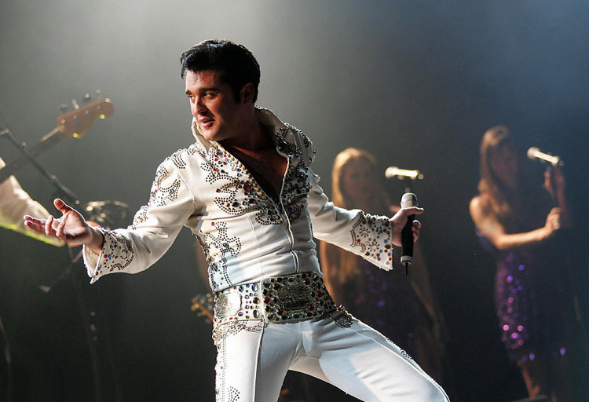

什么是摇滚？朋克说：让我们操翻这个世界；嬉皮士说：没有战争只有做爱；金属说：一帮傻逼（这句有哲理的话我是从豆瓣看到的我会乱讲）。或许摇滚是血液里一种执意的奔突，疯狂的因子在血管里肆无忌惮的冲撞，像是草原上的野牛向着日落前地平线上的最后一抹血红没命的追逐。
在某种意义上，摇滚对很多人来说意味着最疯狂的青春。摇滚不只是长发、皮衣、吉他和架子鼓，摇滚更不只是一个大喊大叫的沙嗓子。摇滚是一种精神，它包含青年的自主意识、爱与和平、反宗教、享乐主义或纵欲主义、悲观主义与虚无主义，这些思想并不统一，有时甚至相互矛盾。摇滚不仅是一种音乐形态，实际上它是一种人生态度和哲学。摇滚有非常多的种类，每个种类都有将摇滚精神发挥到淋漓尽致的代表人物，在众多优秀的摇滚乐手中，没有人不知道“猫王”。
约翰·列侬评价他说：“猫王之前，世界一无所有”。
20世纪30年代，猫王出生在美国一个贫穷的农场工人家庭里。他从小就沉迷于福音音乐，同时贫民窟里流行的节奏强烈的黑人音乐及蓝调、民谣深深打动了年幼的他。20世纪50年代，猫王的音乐开始风靡世界。他的音乐超越了种族以及文化的疆界，将乡村音乐、布鲁斯音乐以及山地摇滚乐融会贯通，形成了具有鲜明个性的独特曲风，强烈的震撼了当时的流行乐坛，并让摇滚乐如同旋风一般横扫了世界乐坛。
从猫王开始，美国青少年发现了自己的臀部，而世界理解了摇滚。他生前让正统社会震怒，死后成为最赚钱的过世艺人。作为摇滚音乐史上伟大的先行者，他的女婿是迈克尔·杰克逊，他的对手是约翰·列侬。1977年8月16日，猫王的未婚妻在浴室的地板上发现他已死去，随后医生在其体内发现了14种成分不同的毒品，认为他是吸食毒品过量致死。后来，每年猫王生日当天（1月8日）他的歌迷都会聚集在一起举行纪念活动，活动中最著名的一项便是猫王模仿秀。
很多音乐人由于擅长原创音乐作品而被大众熟知，最具典型的就是杰伦小公举了，从最初的发音不准到迷倒一大片的天王级人物，原创让他获益无穷。但是！才华横溢的猫王竟然没有原创能力！猫王的许多歌曲脍炙人口，风靡世界，其中有些声称是和其他音乐人联合创作，但实际并未真正参与创作。虽然猫王不擅长创作，但瑕不掩瑜，他独特的嗓音和对摇滚音乐的诠释已经在成为了一种文化的象征。猫王虽死，但摇滚不灭！
1、猫王是世界摇滚乐历史上极具代表性的人物，他离世他的追随者形成了在他生日时庆祝猫王节的传统；
2、20世纪80年代中国出现了第一支摇滚乐队，通常情况下，中国摇滚被描述为一种反传统的工具、反抗主流意识形态、商业建制以及文化霸权的音乐。